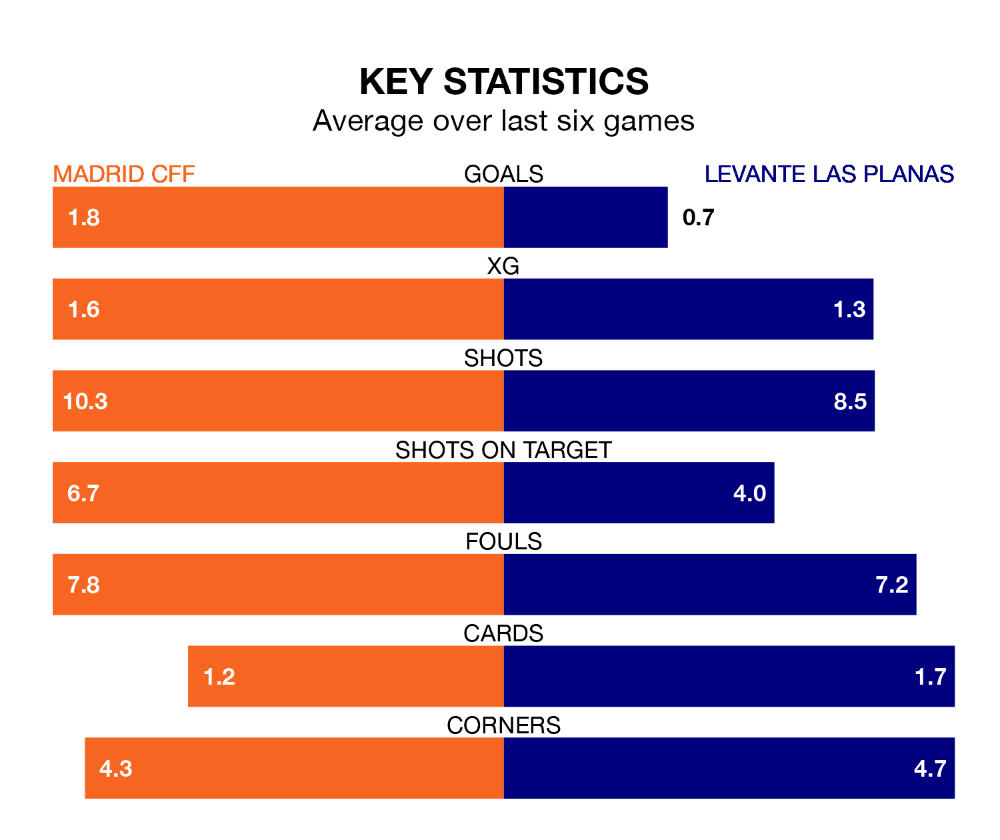

Madrid CFF are heavy favourites to keep all three points at home in Sunday's late kick-off against Levante Las Planas.
Madrid CFF, who sit fourth in Liga F with 17 games played, are priced at 1.3 to seal victory at the Estadio Fernando Torres.
Sitting six places and 14 points behind them in the table, Levante Las Planas are 7.0 to win with *Betting Company*, while the draw is at 5.0.
With 40 goals in 17 games so far this season, Madrid CFF are the league's third-highest scorers with 2.4 goals per game. And they are conceding at an average rate, letting in 27 goals at a rate of 1.6 per game.
Levante Las Planas, meanwhile, are below average scorers, with 1.2 goals per game, compared to a league average of 1.6. They have conceded 1.8 goals per game.
The home team are in mixed form in Liga F, with two wins and three draws from their last six games.
With no wins and three draws over that period, the visitors' form is much worse – they have taken three points from 18, compared to Madrid CFF's nine.
In Racheal Kundanaji, Madrid CFF have one of the league's most on-form strikers so far this season. She has notched eight goals in 14 appearances, to sit fifth in the scoring charts.
Levante Las Planas's top scorers, with five goals in 15 games each, are Anissa Lahmari and Jessica Dahiana Martínez Villagra.
In the last three years, Madrid CFF and Levante Las Planas have played each other on three occasions. Madrid CFF won two of them and they drew once.
Their last meeting was on November 26, when Madrid CFF won 4-3 away.
Madrid CFF's last match was on February 11, a 1-1 draw against Atletico Madrid Women, with Aldana Cometti getting the goal for Madrid CFF.
Levante Las Planas drew 1-1 with Eibar Women last time out, on February 10, with Martínez Villagra on the scoresheet.
Updated: 12:06 (UTC), 15/02/24